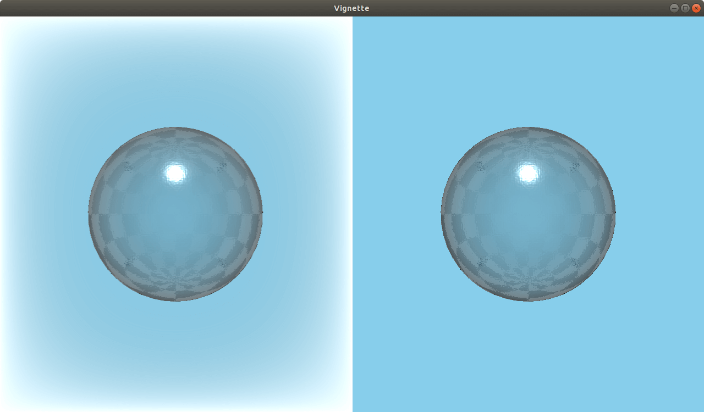

Vignette QML Type
A vignette effect. More...
| Import Statement: | import QtQuick3D.Effects 6.7 |
| Status: | Deprecated since 6.5 |
This type is deprecated since QtQuick3D.Effects 6.5. We strongly advise against using it in new code.
Properties
- vignetteColor : vector3d
- vignetteRadius : real
- vignetteStrength : real
Detailed Description
Use ExtendedSceneEnvironment instead.
Warning: All pre-made standalone effects in QtQuick3D.Effects are considered deprecated starting with Qt 6.5. To apply a vignette effect to the 3D scene, use ExtendedSceneEnvironment instead.

Property Documentation
vignetteColor : vector3d |
Sets the color to use for the vignetting. The default value is Qt.vector3d(0.5, 0.5, 0.5).
vignetteRadius : real |
Specifies the size of the vignetting. The range is [0...5]. The default value is 0.35.
vignetteStrength : real |
Specifies the strength of the vignetting. The range is [0...15]. The default value is 15.